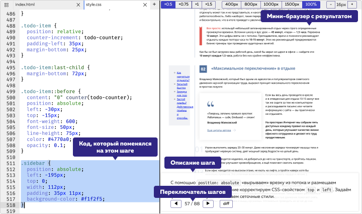
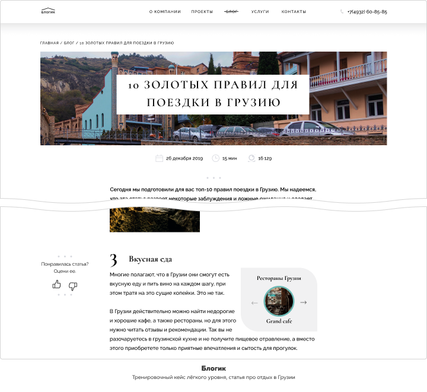

Пул задач, включающий профессиональное оформление текстовых сайтов,
оптимальное подключение сторонних шрифтов, подготовку страниц для работы с CMS,
вёрстку обтекаемых элементов (изображений, буквиц, врезок), тонкую настройку
типографики (переносы слов, неразрывные пробелы, интерлиньяж, трекинг).
Тексты — самый массовый тип контента, который индексируется лучше всего
и наилучшим образом передаёт информацию. Компании стараются повысить
узнаваемость с помощью уникальной типографики и оригинального дизайна. Поэтому
в задачах вёрстки текстов и текстовых элементов есть много тонкостей и особенностей.
Кроме того, в погоне за оригинальным оформлением важно не забывать
о семантичности разметки и доступности самого содержания.
Даже если текст идеально написан, его необходимо оформить: встроить на сайт так,
чтобы его было удобно и приятно читать, если текст большой — структурировать, если
в тексте есть акцентные мысли — правильно их выделить. Владение этими знаниями
и их применение показывает профессионализм верстальщика в работе с текстовым
содержимым.
Освоив этот навык, вы научитесь корректно оформлять тексты и их отдельные
декоративные элементы. Мы рассматриваем как основные технологии, применяющиеся
для вёрстки текстового содержимого, так и отдельные смысловые и декоративные
элементы текстов, и относящиеся к оформлению текстов принципы редакторской
работы.
Этот навык ижет после семантческой разметки и работы с графическими редакторами
в дереве навыков
-- Создание семантической разметки по макету
-- Экспорт параметров и графики из PSD-макетов или Экспорт параметров и графики
из Figma.
Дополняет базовые знания, полученные в интерактивных курсах, всем необходимым
для начала отработки кейсов.
Включает в себя следующую информацию:
-- Как правильно и эффективно подключать шрифты из разных источников.
-- Материал о веб-типографике, её законах и инструментах для правильной и красивой микроразметки
текстов.
-- Информацию о методах оформления нестандартных текстовых элементов, например,
перевёрнутых.
Включает разбор текстовых элементов с семантической, структурной и стилистической точек
зрения, взгляд на эти элементы с редакторской и контентной стороны. Содержит
положительные и отрицательные паттерны, наиболее распространённые подходы
к оформлению, вёрстки примеров.
В каждом кейсе в качестве входных данных мы получаем дизайн страниц. Затем, используя
предложенную методику, пошагово верстаем страницу. На выходе получаем готовую разметку
и стили. Все шаги детально описаны.
Так выглядит страница демонстрационного кейса:
Разборы кейсов выполнены в виде подробных текстовых демонстраций с поясняющими
иллюстрациями и премерами кода.
Так выглядит один из шагов разбора кейса сайта "Блогик":
 Кейсы с возрастающей сложностью и эталонными решениями, на которых
вы и тренируете навык.
В качестве входных вы получаете дизайн страниц, на выходе должна получиться
разметка со стилями
Для тренировочных кейсов нет пробных разборов, но есть эталонное решение от авторов,
которое можно сравнить со своим.
Так выглядит страница тренировочного кейса:
